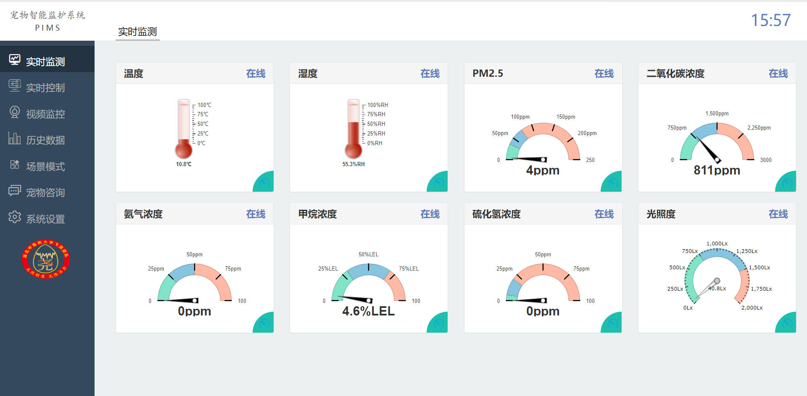
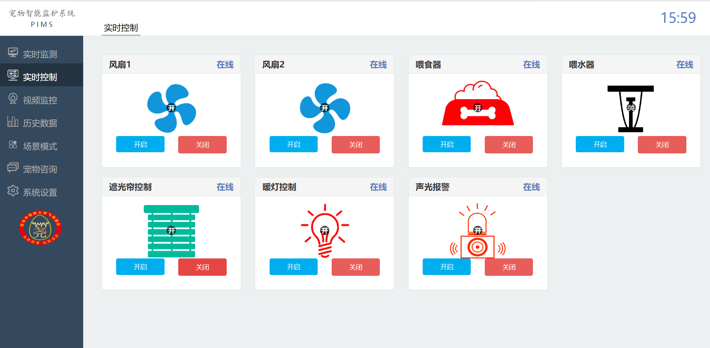
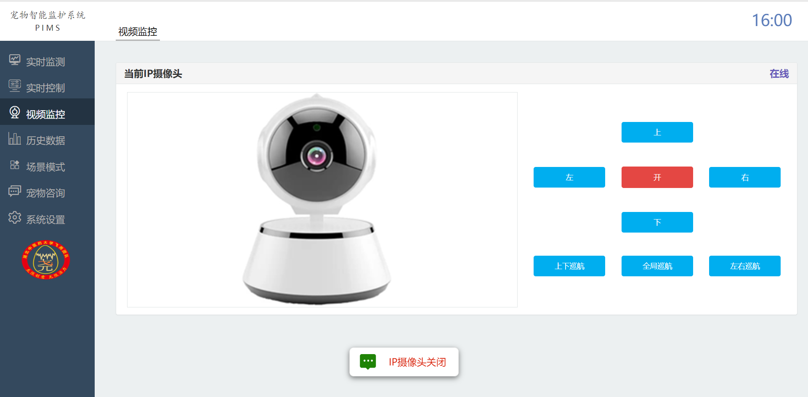
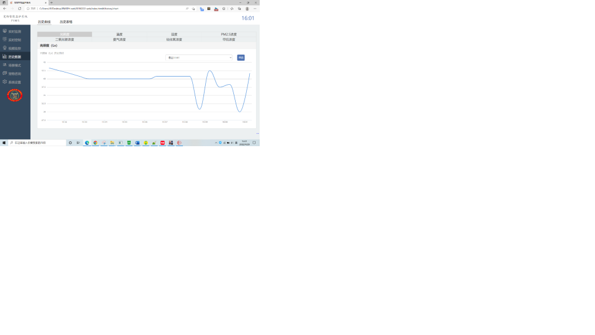
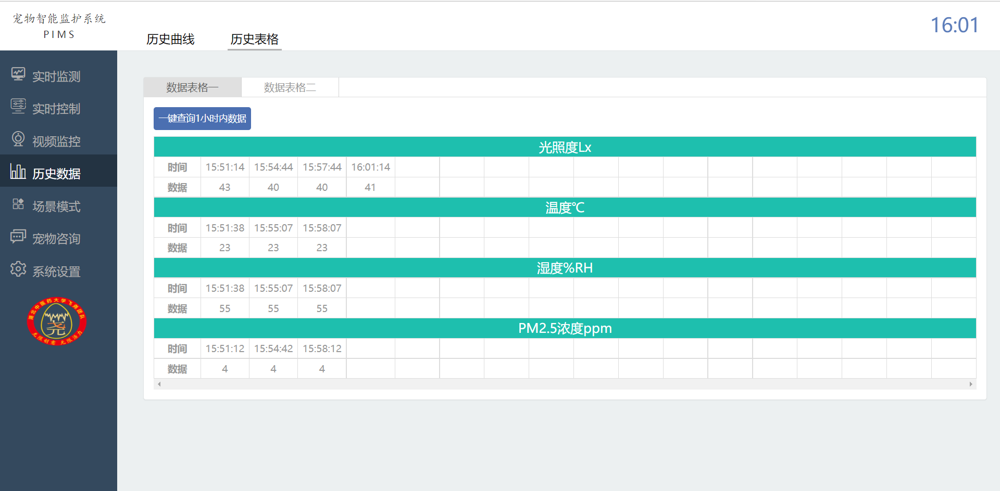
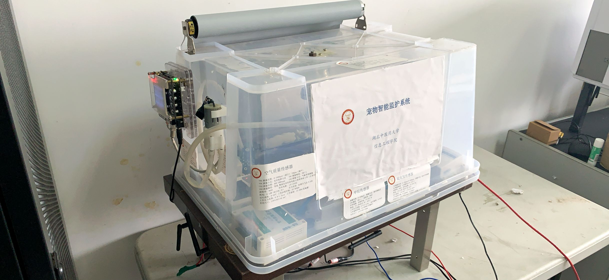

IoT 基地
宠物智能监护系统
基于 RT-Thread 与 ZigBee 的 IoT 监测系统，支持宠物环境感知、远程喂食、设备控制和 Web/App 联动。
该项目获得第15届中国大学生计算机设计大赛省级一等奖、全国三等奖。
项目概览
系统通过多类传感器采集宠物生活环境数据，经 ZigBee、网关和云平台传输，并支持 Web/App 端远程监测与控制。
功能覆盖环境监测、阈值报警、历史数据、视频监控，以及喂食、喂水、通风、补光和声光报警等执行器控制。
我的贡献
- 担任项目负责人和核心实现者。
- 负责硬件组装、接线和整体联调。
- 接入气体、光照、温湿度、继电器、水泵、风扇、喂食等传感器和执行器模块。
- 负责程序烧写、测试、系统演示，以及 Web/App 联动调试。
- 文档主要由其他成员整理。
技术组成
- RT-Thread / 嵌入式板卡环境。
- ZigBee 无线通信与网关转发。
- 智云平台数据采集与转发。
- Android/Web 端实时监测与控制界面。
- 传感器：温度、湿度、二氧化碳、氨气、甲烷、硫化氢、光照。
- 执行器：风扇、遮光帘、喂食、喂水、水泵、继电器、报警设备。
Web 与控制界面
Web 端覆盖实时监测、设备控制、视频监控和历史数据查询，能够把传感器数据、摄像头画面和执行器控制集中到一个界面中。





硬件原型


代码公开说明
该项目代码可以公开。正式发布前，需要移除账号凭据、设备 ID、云平台密钥、摄像头账号和私有服务地址。
app and web / PIMS20220430-web
hardware code / temperature-humidity sensor
hardware code / CO2, ammonia, methane, H2S sensors
hardware code / relay and coordinator modules